Overview
Over the summer, I interned at AKRF's acoustics department in New York City, contributing to 30+ client projects and participating in 15+ site visits. The work covered environmental noise and vibration assessment, acoustic modeling and measurement, impulse response diagnostics and signal processing, technical drafting, speaker system design, and client-facing deliverables. Below is a breakdown of my work.
Environmental Noise & Vibration Assessment
Conducted environmental noise and vibration field measurements on city and private projects using B&K and NTi sound level meters, supporting CEQR and DEP compliance requirements. Site visits ranged from residential buildings to schools to specialized listening rooms, with measurements including Leq, L10, reverberation time, and vibration. Processed raw measurement data in B&K and NTi software, performed calculations for acoustical metrics, and exported and analyzed results in Excel. Assisted with drafting acoustic result reports to clients, providing data interpretation, explanations, and recommendations.
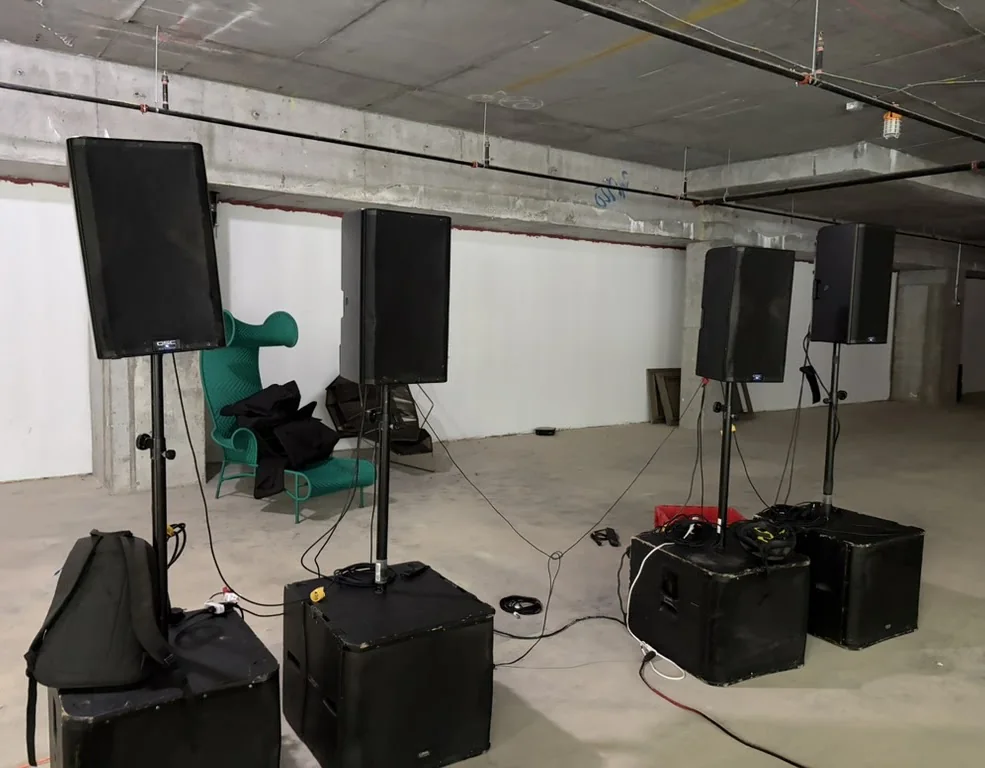
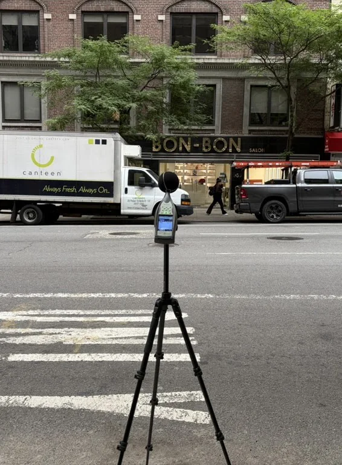
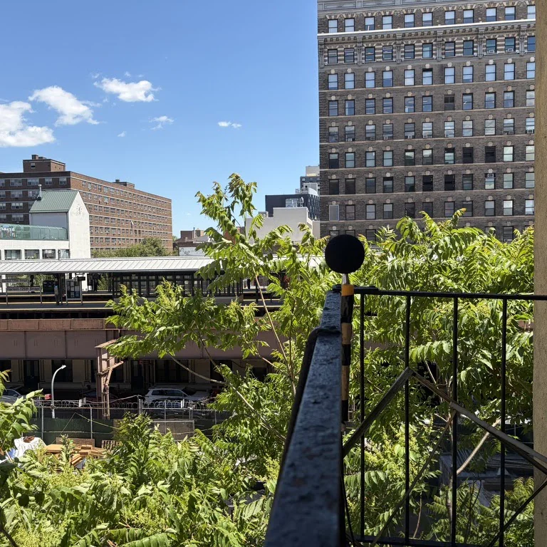
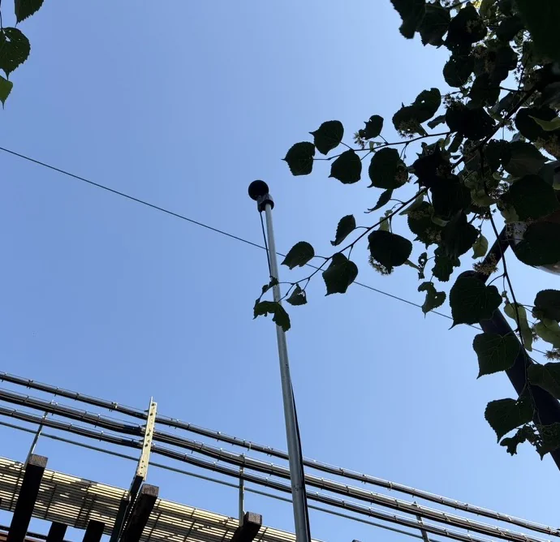
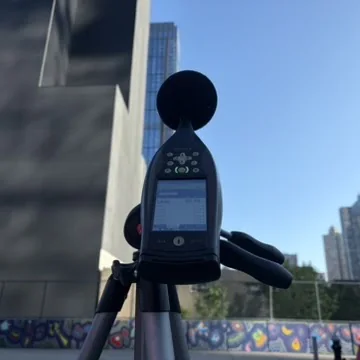
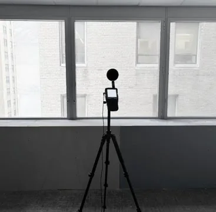
Acoustic Testing: Impact, Transmission & Airborne
Gained project experience conducting impact noise tests (using tapper impact machines and even weight drops), door transmission tests, and airborne reverberation time tests (pink noise method). Read, analyzed, and applied ASTM standards for impact noise and door transmission testing, analyzing 1/3 octave band data from SLM measurements and compiling results for reporting.
On an impact testing project at a gym facility (cellar gym, dental office on the 1st floor, residences above), performed weight-drop tests (30–50 lbs) while a colleague monitored floor-ceiling assembly transmission and structure-borne vibration in the receive room using an accelerometer and SLM. Captured LAFmax in 1/3 octave bands. Analysis concluded that the gym's impact noise raised the dental office noise floor by up to 22 dB, exceeding the applicable 15 dB limit.
Pindrop Spatial Audio and Calibration
Calibrated AKRF's PinDrop listening room (10.1 configuration) using Genelec GLM and an omnidirectional microphone, running a sine sweep from each speaker at each of eight microphone positions to set EQ, delay, and level, then verified the resulting calibration.
Unlocked the room's ambisonics capability by building a signal chain for full ambisonic playback of both A-format and B-format Ambeo recordings. Created an aggregate audio device to bring nine BlackHole inputs into Reaper, separating pre-converted B-format material onto a master bus and a dedicated A-format track routed through an A-to-B converter. Applied IEM's AllRADecoder and DistanceCompensator on the master bus, controlled by measured azimuth, elevation, and distance values for all ten speakers, so any source could be decoded accurately to the room's actual speaker layout and played back through Treble in any modeled space. Also expanded the PinDrop SketchUp model to add a second listening position (middle of room position), re-measuring speaker geometry from that point to improve directional accuracy outside the primary sweet spot.
Separately, converted 4-channel AMBEO field recordings into stereo in Reaper (A-to-B format conversion and mid-side processing) for import into Ableton, and troubleshot a low-frequency deficit when level matching an ambisonics recording to the 10.1 playback setup, taking SLM readings at multiple simulated listener positions to isolate the mismatch.
Acoustic Modeling in Treble
Measured reverberation time at specific positions in a space to establish a baseline for model validation, then built a SketchUp model of the room from building and floor plans, organizing surfaces into a subfolder and assigning tags by material type (windows, walls, ceiling). After import into Treble, assigned absorption, scattering, and other acoustic coeffs to each tagged material, calculated RT at the same positions measured in the field with matched source and receiver placement, and compared modeled RT and frequency spectra against the field data, iterating on material assignments until the model agreed with measured conditions.
For treatment design, modeled the proposed acoustic panel geometry in SketchUp and assigned custom materials with defined absorption spectra, then used Treble's functionality to build parallel untreated and treated models. This helped with direct A/B comparison of RT and spectral performance to evaluate treatment effectiveness before anything was installed.
Residential HVAC Noise & Vibration Investigation
Assisted with a noise and vibration investigation at a residential apartment where HVAC equipment in a lower-level crawl space was generating ongoing complaints from the owner. The crawl space housed two Wine Guardian evaporator units (suspended via threaded rods from the concrete slab above with rubber-in-shear isolators) and an Aprilaire dehumidifier unit resting on a layered vibration isolation assembly on the slab. Both were producing low-frequency structure-borne noise that was re-radiating into the atrium above as audible airborne noise, most noticeable during quiet background conditions.
Conducted a two-phase survey: an initial walk-through to visually and aurally document the offending equipment, followed by a full noise and vibration measurement campaign using a B&K 2-channel system. Collected accelerometer and airborne measurements on the dehumidifier, unistrut, concrete floor, adjacent wall, and ceiling slab in the crawl space, as well as on the atrium wall, floor, and upper level, all in unit-on and unit-off conditions (15 measurement configurations total). Analyzed 1/3 octave band data, generated NC curves/SPL graphs, and compared on/off scenarios across all positions.
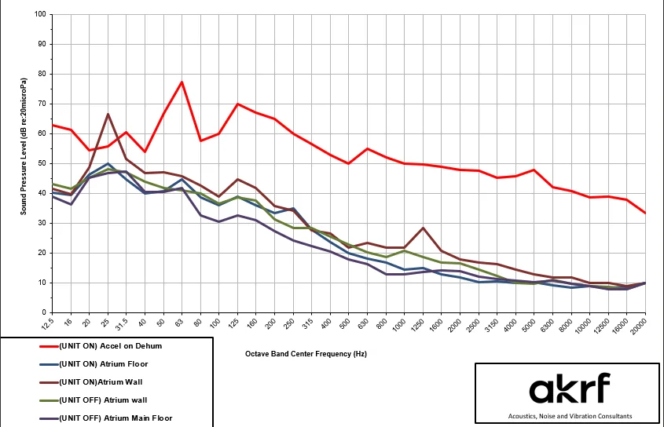
Analysis identified the dehumidifier as the dominant low-frequency noise source. The NC charts/SPL graphs showed clear spikes at 25, 63, and 125 Hz, particularly pronounced near the atrium wall. The 25 Hz dip was notably absent from the crawl space vibration and airborne measurements taken directly on the dehumidifier, leading to the conclusion that the 25 Hz energy was driven by a room mode in the atrium rather than direct radiation from the unit. The wall was identified as the weaker structural path compared to the 1.5-foot concrete slab separating the crawl space from the atrium, making it the primary transmission route for structure-borne vibration.
Helped analyze all data, write the report, and contributed to the acoustic and vibration recommendations. Key recommendations included swapping the wine units' existing 0.40-inch deflection rubber-in-shear isolators for 1.00-inch deflection spring/neoprene isolators to better attenuate low-frequency vibration, and either disconnecting the dehumidifier (if not mechanically required) or remounting it on improved isolation to address the dominant noise source.
PinDrop Impulse Response Diagnostics
Identified a frequency response dip at approximately 300 Hz in the PinDrop listening room, caused by destructive interference between early reflections off the ceiling, side walls, and floor interacting with the direct sound from the front left and right speakers. The interference corresponds to roughly a 1.7 ms delay (~1.9 feet of extra path length), consistent with a ceiling or side wall first-reflection bounce.
To investigate, removed the Genelec GLM calibration from the front speakers to isolate their raw frequency responses, then conducted a 12-measurement sine sweep campaign (6 listener positions × 2 speakers) captured with an NTi SLM. Trimmed the recordings with pre-sweep silence preserved and the full reverb tail intact, no input fades and no per-file normalization. Deconvolved the recordings against the inverse filter of the reference sweep to extract impulse responses, resolving an initial deconvolution error where convolution with the raw sweep (rather than its inverse) produced an artifact instead of a clean impulse.
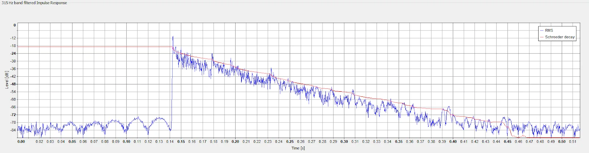
Processed all 12 IRs through Aurora's ISO 3382 framework. Initially lost most low-frequency data below 315 Hz due to two compounding issues: low gain staging on the NTi (poor SNR where background noise is highest) and over-aggressive IR fading that destroyed decay information needed for T20 computation. Reducing the fade to a gentle half-Hanning window applied well after room decay recovered data across the 80–250 Hz bands.
Compiled T20 results into a comparison spreadsheet with the 2025 baseline measurements (straight-firing speaker configuration) and three Treble acoustic model predictions. Imported pre-rotation and post-rotation IRs into Room EQ Wizard, overlaid frequency responses with 1/12 octave smoothing, and concluded that the 30° speaker toe-in did not meaningfully alter the frequency response as the 300 Hz dip is inherent to the room geometry. The project is paused pending senior review before moving to reflector design in Treble.
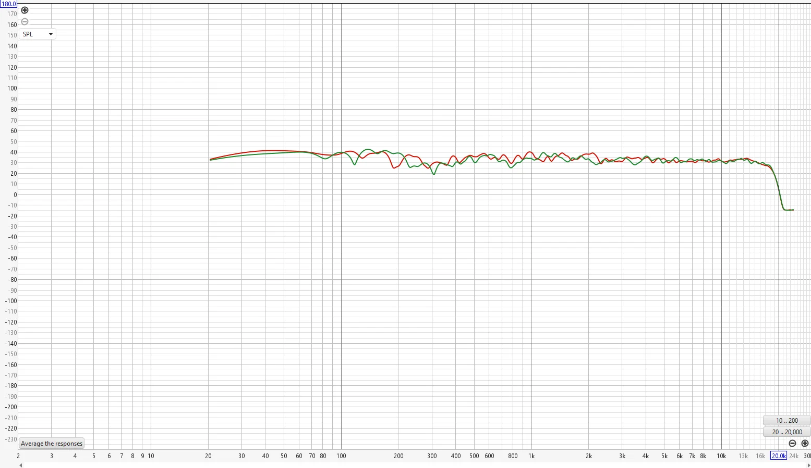
This project provided hands-on experience with the interaction of room modes, wall construction tradeoffs (stiff walls for isolation vs. compliant walls for low-frequency absorption), and early reflection interference in frequency response. A critical takeaway was the asymmetry between constructive and destructive interference: constructive interference yields at most 3-6 dB of boost, while destructive interference can produce near-total cancellation, which is why frequency response nulls cannot be corrected with EQ and require physical acoustic treatment at the reflection surfaces.
Vibration Testing for Auralization
Worked on a vibration testing project using two transducers (configured as accelerometers) mounted to the 7th floor ceiling, connected to DP900 measurement software, while controlled stepping, walking, and flat-bottomed weight impacts were performed on the 8th floor with varying padding thicknesses and materials. Monitored and analyzed third-octave band data, then processed the audio recordings for the PinDrop auralization suite to produce acoustically accurate content for client demonstrations.
CadnaA Noise Modeling
Contributed to long-term noise modeling work in CadnaA for a large-scale urban development project in New York City. Built and refined both existing ambient noise condition models and predicted future construction noise models, which are used to assess noise impact on surrounding buildings and inform required mitigation measures for environmental review. Work involved constructing the 3D site model (buildings, receptors, noise sources), assigning receiver positions to building façades across the project area, and processing the output data in Excel for analysis and reporting. This project provided sustained experience with the full CadnaA modeling workflow, from geospatial setup through calculation and results verification, on an urban development.
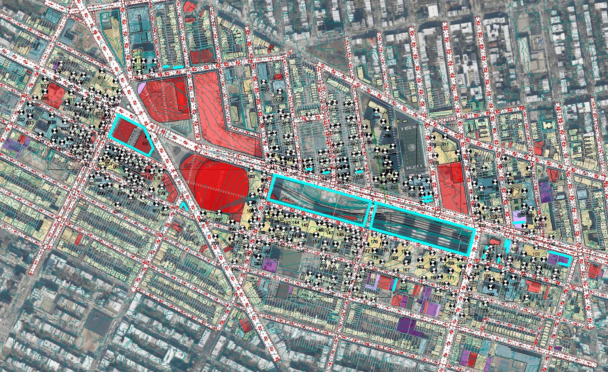
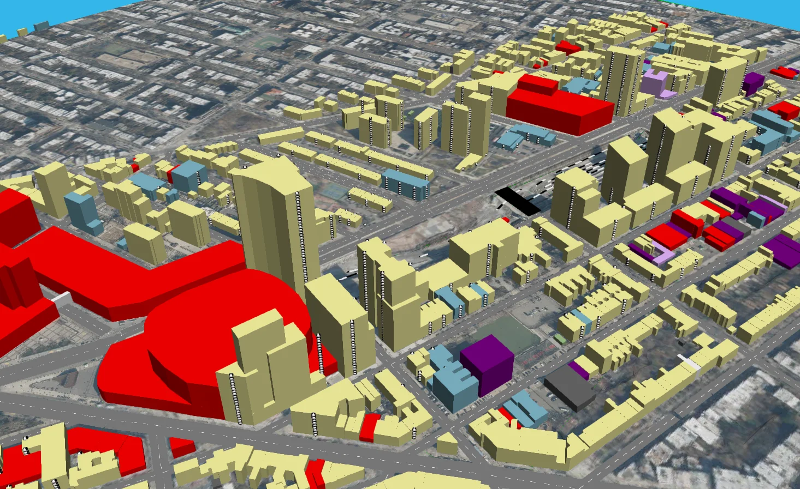
Sound Masking Speaker Layout
Designed a sound masking speaker layout for a 16-floor correctional facility, working from architectural drawings in Bluebeam Revu. Applied acoustical judgment and sound masking design principles to determine speaker placement, spacing, and coverage across all floor plans.
PinDrop Front Wall Technical Drawing
Dimensioned the entire PinDrop front wall (speaker coves, subwoofer cutouts, camera cutouts, screens, and all mounted devices), then modeled the wall in CAD. Produced a precisely dimensioned elevation and plan view drawing with all devices imported. The drawing was sent to an acoustic panel company for fabrication of new front wall panels.
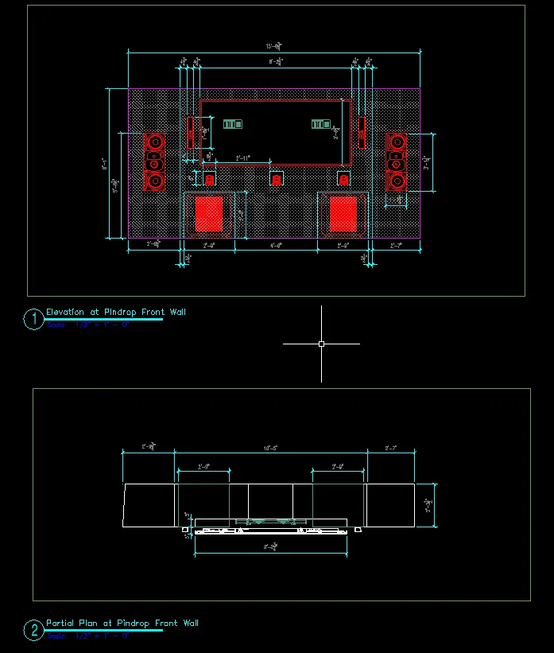
Reflection
This internship was an incredible experience, and I'm deeply grateful to AKRF (especially the acoustics team) for the opportunity. What stood out most was how welcoming and supportive everyone on the team was from day one. The people made this experience what it was. I came in hoping to learn about acoustical consulting and left with a much fuller picture of the field and an appreciation for the collaborative culture that makes great engineering work possible.